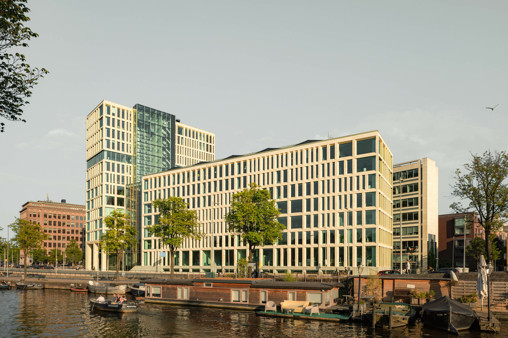
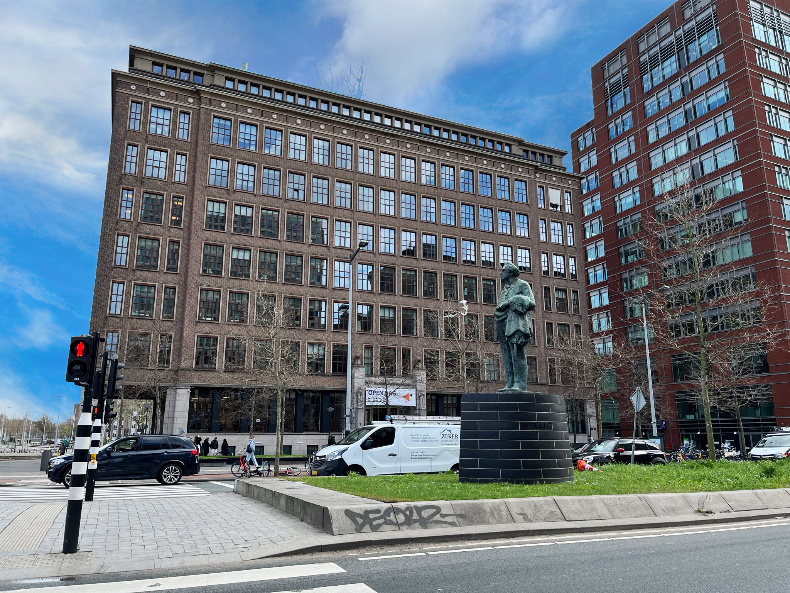
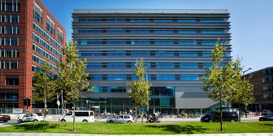
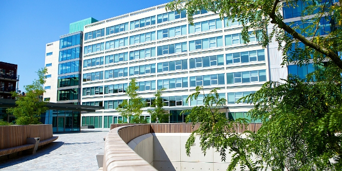
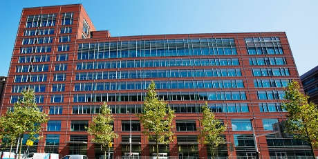
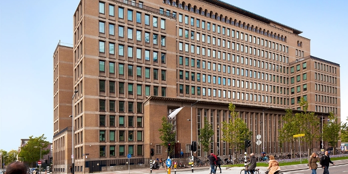

Op de Amstelcampus bestaat uit 8 locaties.
Daarnaast zijn er pleinen en hoven.
Op de locaties zijn cafés, restaurants, koffiecorners,
bibliotheken, sporthal, gymzaal,
debat- en activiteitencentrum en plakken waar je kan studeren.
Locaties
Jakoba Mulderhuis

| Reguliere openingstijden | |
|---|---|
| Ma-Di | 7.30 - 22.30 |
| Woe-Do | 7.30 - 21.00 |
| Vr | 7.30 - 19.00 |
| Za-Zo | Gesloten |
Ir. Jakoba Helena (Ko) Mulder (1900-1988) was architect en
behoorde tot de meest invloedrijke Amsterdamse stedenbouwers van de vorige eeuw.
Van 1930 tot 1965 werkte ze als één van de weinige vrouwen bij de
Dienst der Publieke Werken van de gemeente Amsterdam.
Zij heeft onmiskenbaar haar stempel gedrukt op de ruimtelijke ontwikkeling
van Amsterdam en daarmee op de woon- en leefkwaliteit van de stad vandaag de dag.
Sprekende voorbeelden zijn haar ontwerpen van het Amsterdamse Bos en de tuinsteden
in West en Zuid, maar ook de introductie van het concept hovenbouw en
haar grote aandeel in de aanleg van talloze nieuwe openbare speelplaatsen.
Benno Premselahuis

| Reguliere openingstijden | |
|---|---|
| Ma-Do | 7.30 - 19.30 |
| Vr | 7.30 - 18.00 |
| Za-Zo | Gesloten |
Benno Premsela (1920-1997) was een Amsterdamse vormgever en binnenhuisarchitect.
Hij speelde een belangrijke rol in de Nederlandse kunstwereld
van na de oorlog, en was een voorvechter van de homo-emancipatie.
Muller-Lulofshuis

| Reguliere openingstijden | |
|---|---|
| Ma-Do | 7.30 - 19.30 |
| Vr | 7.30 - 18.00 |
| Za | Gesloten |
| Zo | 9.00 - 18.00 |
Marie Geertruide Muller-Lulofs (1854-1954)
was de oprichtster van de eerste school voor maatschappelijk werk in Nederland,
en een bekende spil in de sociaal liberale- en feministische beweging
in Nederland.
Theo Thijssenhuishuis

| Reguliere openingstijden | |
|---|---|
| Ma-Do | 7.30 - 22.30 |
| Vr | 7.30 - 18.00 |
| Za-Zo | Gesloten |
Theodorus Johannes (Do) Thijssen (16 juni 1879 - 23 december 1943)
was een Nederlands schrijver, onderwijzer en socialistisch politicus.
Zijn bekendste boek is Kees de jongen (1923), dat in de
Amsterdamse Jordaan speelt.
Wibauthuis

| Reguliere openingstijden | |
|---|---|
| Ma-Do | 7.30 - 22.30 |
| Vr | 7.30 - 20.00 |
| Za | 8.30 - 17.30 |
| Zo | Gesloten |
Floor Wibaut (1859-1936) was een Amsterdamse wethouder
met grote impact op de stedelijke ontwikkeling en verbetering van de sociale omstandigheden.
Hij werd ook wel de 'onderkoning' van Amsterdam genoemd.
Zijn standbeeld staat vlakbij het Wibauthuis op de
brug over de Singelgracht.
Kohnstammhuis

| Reguliere openingstijden | |
|---|---|
| Ma-Do | 7.30 - 22.30 |
| Vr | 7.30 - 18.00 |
| Za-Zo | Gesloten |
Philip Kohnstamm is een Nederlands natuurkundige,
filosoof en pedagoog,
en is bekend geworden als
grondlegger van de wetenschappelijke pedagogiek
en didactiek in Nederland.
Daarnaast wordt hij ook gezien als
grondlegger van de empirische onderwijskunde,
als continue verbetermethode voor onderwijs
en opvoeding.